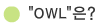
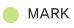
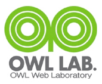

|
| |
- 인터넷 1세대부터 키워온 기술력을 바탕으로 고객에게 최고의 기술력을 제공하는 아울연구소가 되겠습니다.
|
|  |
| "OWL"은 "아울"이라고 읽으며, 말그대로 "올빼미" 또는 "부엉이"를 의미합니다. |
| 올빼미는 우리생활에서 빈번히 비유되어 다양한 모습으로 다가옵니다.
일반적으로 "똑똑함", "눈에 보이지 않음", "밤을 새는...", "일에 열중하는..." 등을 상징하고, 한편으로는 "한곳에 집중한 나머지 지극히 우둔함"을 의미하기도 합니다.
이렇듯 "아울"은 무엇인가에 신념을 갖고 전념하지만, 이로 인해서 아둔해지거나 함정에 빠지는 것을 경계한다는 의미에서 지어진 이름입니다. |
| |
|  |
|  |
아울의 마크는 "올빼미"의 눈과 부리를 착안하여 형상화했습니다.
올빼미의 눈과 같이 한곳에 몰두하여 연구하는 자세를 상징하고, 올빼미의 부리와 같이 정확하고 날카로운 판단력을 상징합니다. |
|
|